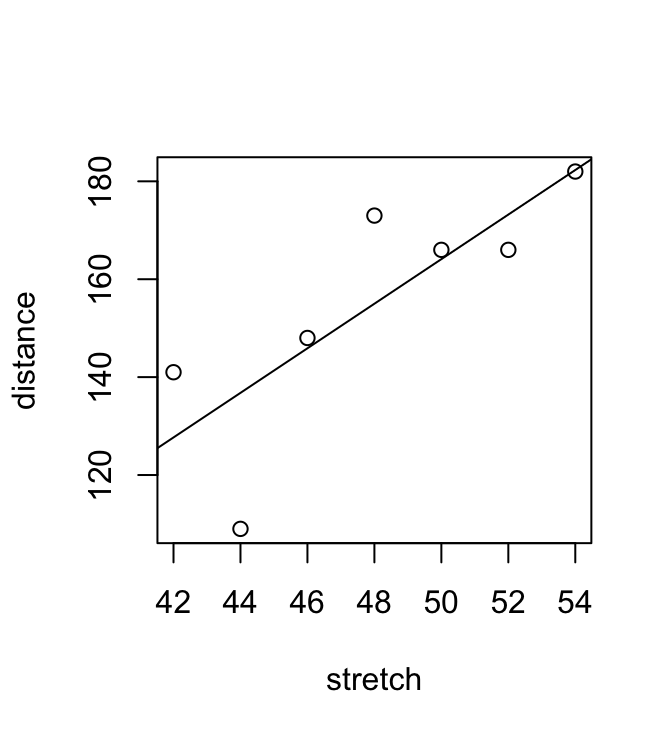
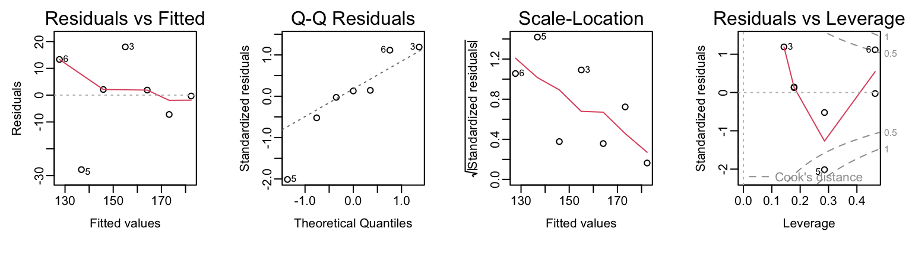
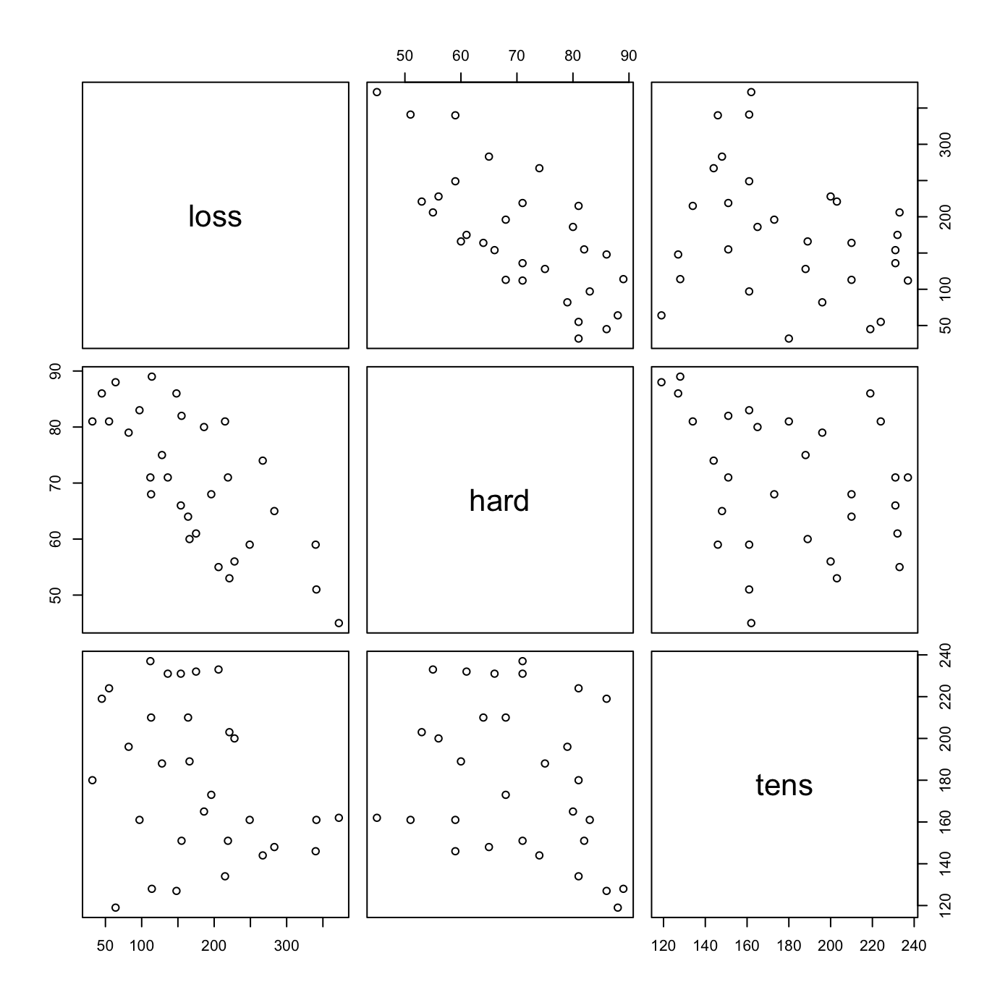
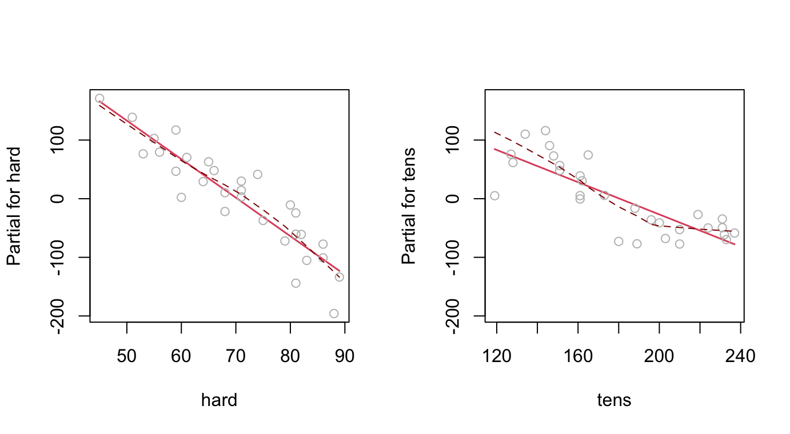
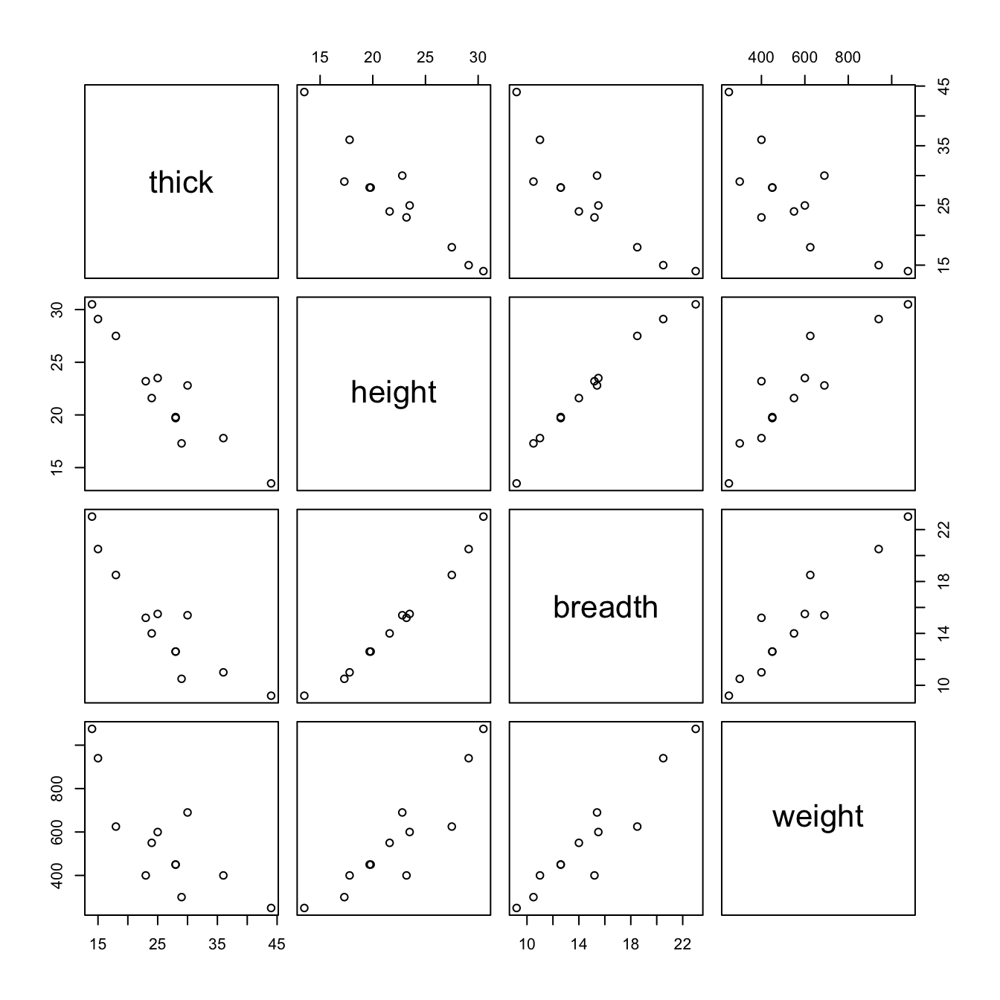
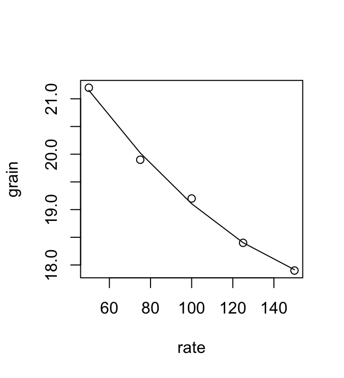
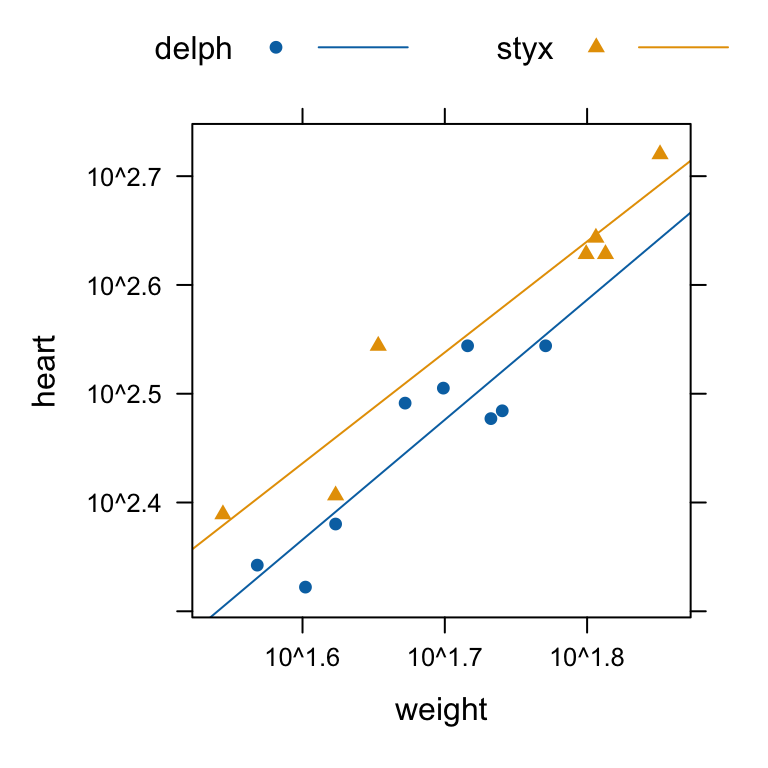
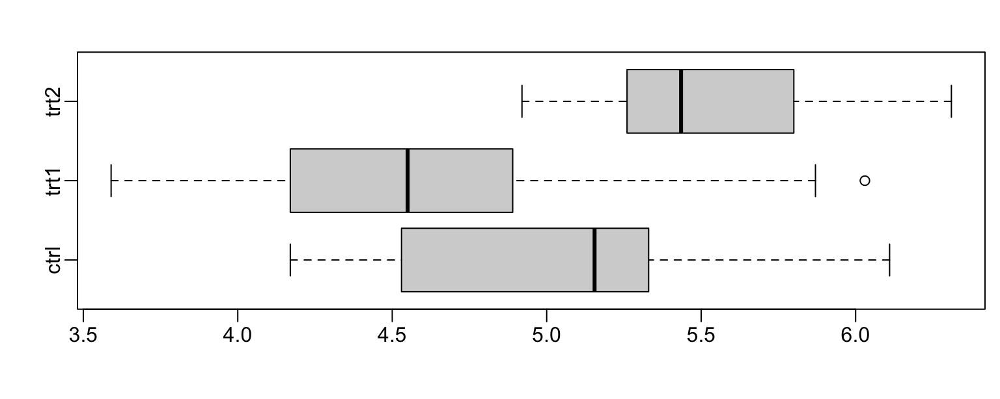

elastic.lm <- lm(distance ~ stretch, data=DAAG::elasticband)3 Multiple Linear Regression
3.1 Linear model objects
We begin with the straight line regression example that appeared earlier, in Section 1.1. Look ahead to Figure 3.1, where a regression line has been added.
The code for the regression calculation is:
The object distance ~ stretch is a model formula, used to specify details of the model that is to be fitted. Other model formulae will appear in the course of this chapter.
elasticband <- DAAG::elasticband
plot(distance ~ stretch, data=DAAG::elasticband)
abline(elastic.lm)
The output from the regression is an lm object, which we have called elastic.lm. Now examine a summary of the regression results. Notice that the output documents the model formula that was used:
summary(elastic.lm, digits=4)
Call:
lm(formula = distance ~ stretch, data = DAAG::elasticband)
Residuals:
1 2 3 4 5 6 7
2.1071 -0.3214 18.0000 1.8929 -27.7857 13.3214 -7.2143
Coefficients:
Estimate Std. Error t value Pr(>|t|)
(Intercept) -63.571 74.332 -0.855 0.4315
stretch 4.554 1.543 2.951 0.0319
Residual standard error: 16.33 on 5 degrees of freedom
Multiple R-squared: 0.6352, Adjusted R-squared: 0.5622
F-statistic: 8.706 on 1 and 5 DF, p-value: 0.03186An lm object is a list of named elements. Names of elastic.lm are:
names(elastic.lm)
[1] "coefficients" "residuals" "effects" "rank"
[5] "fitted.values" "assign" "qr" "df.residual"
[9] "xlevels" "call" "terms" "model" A number of functions are available for extracting information that might be required from the list. This is or most purposes preferable to extracting elements from the list directly. Examples are:
coef(elastic.lm)
(Intercept) stretch
-63.571429 4.553571 The function most often used to inspect regression output is summary(). It extracts the information that users are most likely to want. In section 5.1, we had
summary(elastic.lm)There is a plot method for lm objects that gives the diagnostic information shown in Figure 3.2.

plot(elastic.lm).To get Figure 3.2, type:
opar <- par(mar=c(4.6,3.6,2.1,2.1), mgp=c(2,.5,0), mfrow=c(1,4))
plot(elastic.lm)
par(opar)By default the first, second and fourth plot use the row names to identify the three most extreme residuals. [If explicit row names are not given for the data frame, then the row numbers are used.]
3.2 Model Formulae, and the X Matrix
The model formula for the elastic band example was distance ~ stretch . The model formula is a recipe for setting up the calculations. All the calculations described in this chapter involve the use of an model matrix or X matrix, and a vector y of values of the dependent variable. For some of the examples we discuss later, it helps to know what the X matrix looks like. Details for the elastic band example follow. The X matrix, with the y-vector alongside, is:
cbind(model.matrix(elastic.lm), distance=elasticband$distance)
(Intercept) stretch distance
1 1 46 148
2 1 54 182
3 1 48 173
4 1 50 166
5 1 44 109
6 1 42 141
7 1 52 166The model matrix relates to the part of the model that appears to the right of the equals sign. The straight line model is \(y = a + b x + \mbox{residual}\), which we write as \[ y = a \times 1 + b \times x + \mbox{residual}\] The following are the fitted values and residuals that we get with the estimates of a (= -63.6) and b ( = 4.55) from the least squares regression
| 1 | Stretch (mm) | (Fitted) | (Observed) | (Residual) |
|---|---|---|---|---|
| \(-63.6 \times\) | \(4.55 \times\) | \(-63.6 + 4.55 \times \mbox{Stretch}\) | \(\mbox{Distance (mm)}\) | \(\mbox{Observed – Fitted}\) |
| 1 | 46 | \(-63.6 + 4.55 \times 46 = 145.7\) | 148 | 148-145.7 = 2.3 |
| 1 | 54 | \(-63.6 + 4.55 \times 54 = 182.1\) | 182 | 182-182.1 = -0.1 |
| 1 | 48 | \(-63.6 + 4.55 \times 48 = 154.8\) | 173 | 173-154.8 = 18.2 |
| 1 | 50 | \(-63.6 + 4.55 \times 50 = 163.9\) | 166 | 166-163.9 = 2.1 |
| … | … | … | … | … |
The symbol \(\hat{y}\) [pronounced y-hat] is commonly used fot fitted values of the variable \(y\).
We might alternatively fit the simpler (no intercept) model. For this we have \[
y = x \times b + e
\] where \(e\) is a random variable with mean 0. The X matrix then consists of a single column, holding the values of x.
3.2.1 Model formulae more generally
Model formulae take forms such as:
y ~ x+z # Fit y as a linear combination of x and z
y~x + fac + fac:x
# If fac is a factor and x is a variable, fac:x allows
# a different slope for each different level of fac.Model formulae are widely used to set up most of the model calculations in R.
Notice the similarity between model formulae and the formulae that can be used for specifying plots. Thus, recall the graph formula for a coplot that gives a plot of y against x for each different combination of levels of fac1 (across the page) and fac2 (up the page) is:
y ~ x | fac1+fac23.2.2 *Manipulating Model Formulae
Model formulae can be assigned, e.g.
formyxz <- formula(y~x+z)or
formyxz <- formula(“y~x+z”)The argument to formula() can, as just demonstrated, be a text string. This makes it straightforward to paste the argument together from components that are stored in text strings. For example
names(elasticband)
[1] "stretch" "distance"nam <- names(elasticband)
formds <- formula(paste(nam[1],"~",nam[2]))
lm(formds, data=elasticband)
Call:
lm(formula = formds, data = elasticband)
Coefficients:
(Intercept) distance
26.3780 0.1395 Note that graphics formulae can be manipulated in exactly the same way as model formulae.
3.3 Multiple Linear Regression Models
3.3.1 The data frame Rubber
The data set MASS::Rubber is from the accelerated testing of tyre rubber. The variables are loss (the abrasion loss in gm/hr), hard (hardness in ‘Shore’ units), and tens (tensile strength in kg/sq m).1 Figure 3.3 shows a scatterplot matrix for the variables:

MASS::RubberCode is:
pairs(MASS::Rubber)There is a negative correlation between loss and hard.
We proceed to regress loss on hard and tens.
Rubber.lm <- lm(loss~hard+tens, data=MASS::Rubber)
summary(Rubber.lm, digits=3)
Call:
lm(formula = loss ~ hard + tens, data = MASS::Rubber)
Residuals:
Min 1Q Median 3Q Max
-79.385 -14.608 3.816 19.755 65.981
Coefficients:
Estimate Std. Error t value Pr(>|t|)
(Intercept) 885.1611 61.7516 14.334 3.84e-14
hard -6.5708 0.5832 -11.267 1.03e-11
tens -1.3743 0.1943 -7.073 1.32e-07
Residual standard error: 36.49 on 27 degrees of freedom
Multiple R-squared: 0.8402, Adjusted R-squared: 0.8284
F-statistic: 71 on 2 and 27 DF, p-value: 1.767e-11In addition to the use of plot() with lm objects, note the use of termplot().
par(mfrow=c(1,2))
termplot(Rubber.lm, partial=TRUE, smooth=panel.smooth)
Figure @ref(fig:fig24) used the following code:
par(mfrow=c(1,2))
termplot(Rubber.lm, partial=TRUE, smooth=panel.smooth)This plot raises interesting questions.
3.3.2 Weights of Books
The books to which the data in the data set DAAG::oddbooks refer were chosen to cover a wide range of weight to height ratios. The use of the data to fit regression models illustrates how biases that affect the collection of observational data can skew results.

DAAG::oddbooksCode is:
pairs(DAAG::oddbooks)The correlations between thick, height and width are so strong that if one tries to use more than one of them as a explanatory variables, the coefficients are ill-determined. They contain very similar information, as is evident from the scatterplot matrix. The regressions on height and width give plausible results, while the coefficient of the regression on thick is entirely an artefact of the way that the books were selected.
The design of the data collection really is important for the interpretation of coefficients from a regression equation. Even where regression equations from observational data appear to work well for predictive purposes, the individual coefficients may be misleading. This is more than an academic issue, as the analyses in Lalonde (1986) demonstrate. They had data from experimental “treatment” and “control” groups, and also from two comparable non-experimental “controls”. The regression estimate of the treatment effect, when comparison was with one of the non-experimental controls, was statistically significant but with the wrong sign! The regression should be fitted only to that part of the data where values of the covariates overlap substantially. Dehejia and Wahba demonstrate the use of scores (“propensities”) to identify subsets that are defensibly comparable. The propensity is then the only covariate in the equation that estimates the treatment effect. It is impossible to be sure that any method is giving the right answer.
Assuming a uniform density, the geometry suggests \[ \mbox{weight} = \mbox{density} \times \mbox{thick} \times \mbox{height} \times \mbox{breadth} \] On a logarithmic scale, this transforms to \[ \begin{aligned} \log(\mbox{weight}) &= \log(\mbox{density}) + \log(\mbox{thick}) + \log(\mbox{height}) + \log(\mbox{breadth})\\ &= \log(\mbox{density}) + \log(\mbox{volume}) \end{aligned} \]
The following ignores what the geometry suggests
logbooks <- log(DAAG::oddbooks) # We might expect weight to be
# proportional to thick * height * width
## Regress log(weight) on log(thick) + log(height) + log(breadth)
logbooks.lm3<-lm(weight~thick+height+breadth,data=logbooks)
# NB: `weight` is really `log(weight)`,
# and similarly for other variables
cat(capture.output(summary(logbooks.lm3, digits=2))[-(1:8)], sep='\n')
Coefficients:
Estimate Std. Error t value Pr(>|t|)
(Intercept) -0.7191 3.2162 -0.224 0.829
thick 0.4648 0.4344 1.070 0.316
height 0.1537 1.2734 0.121 0.907
breadth 1.8772 1.0696 1.755 0.117
Residual standard error: 0.1611 on 8 degrees of freedom
Multiple R-squared: 0.8978, Adjusted R-squared: 0.8595
F-statistic: 23.43 on 3 and 8 DF, p-value: 0.000257Notice that all the coefficients are at the level of statistical error, but even so the overall fit (\(p\)=0.000257) is clearly good.
Now regress on \(\mbox{logVolume}\) = \(\log(\mbox{volume})\)
## Regress log(weight) on log(thick) + log(height) + log(breadth)
logVolume <- with(logbooks, thick+height+breadth)
logbooks.lm <- lm(weight~logVolume, data=logbooks)
cat(capture.output(summary(logbooks.lm, digits=2))[-(1:8)], sep='\n')
Coefficients:
Estimate Std. Error t value Pr(>|t|)
(Intercept) -8.942 2.731 -3.274 0.00837
logVolume 1.696 0.305 5.562 0.00024
Residual standard error: 0.2228 on 10 degrees of freedom
Multiple R-squared: 0.7557, Adjusted R-squared: 0.7313
F-statistic: 30.94 on 1 and 10 DF, p-value: 0.00024The model still does relatively well on the data used. Note however that the coefficient of logVolume differs from the expected 1.0 by 2.28 standard errors.
Figure @ref(fig:fig25) made it clear that all three variables are highly correlated. We now try adding each one in turn to the model regressed \(\log(\mbox{weight})\) on \(\mbox{logVolume}\).
print(add1(logbooks.lm, scope=~.+thick+height+breadth, test='F'), digits=4)
Single term additions
Model:
weight ~ logVolume
Df Sum of Sq RSS AIC F value Pr(>F)
<none> 0.4966 -34.22
thick 1 0.2739 0.2227 -41.84 11.072 0.00884
height 1 0.2437 0.2528 -40.32 8.677 0.01634
breadth 1 0.2872 0.2094 -42.58 12.347 0.00658
print(add1(logbooks.lm, scope=~.+thick+height+breadth, test='F'), digits=3)
Single term additions
Model:
weight ~ logVolume
Df Sum of Sq RSS AIC F value Pr(>F)
<none> 0.497 -34.2
thick 1 0.274 0.223 -41.8 11.07 0.0088
height 1 0.244 0.253 -40.3 8.68 0.0163
breadth 1 0.287 0.209 -42.6 12.35 0.0066The smallest value of the AIC statistic is preferred, though given the small degrees of freedom for the residual, not too much can be made of the magnitude of the reduction in AIC. The preferred model (which is also the model that gives the smallest Pr(>F)) is then:
addBreadth.lm <- update(logbooks.lm, formula=.~.+breadth)
cat(capture.output(summary(addBreadth.lm, digits=2))[-(1:8)], sep='\n')
Coefficients:
Estimate Std. Error t value Pr(>|t|)
(Intercept) -0.9192 2.9508 -0.311 0.76252
logVolume 0.4564 0.4100 1.113 0.29452
breadth 1.1562 0.3291 3.514 0.00658
Residual standard error: 0.1525 on 9 degrees of freedom
Multiple R-squared: 0.897, Adjusted R-squared: 0.8741
F-statistic: 39.19 on 2 and 9 DF, p-value: 3.611e-05Once account has been taken of breadth, volume does not make any clearly useful contribution to predicting weight. This is a result that has no, or very limited, applicability outside of the circumstances that generated this dataset.
3.4 Polynomial and Spline Regression
Linear regression is linear in the explanatory terms that are supplied. These can include, for example polynomial terms. Note that polynomial curves of high degree are in general unsatisfactory. Spline curves, constructed by joining low order polynomial curves (typically cubics) in such a way that the slope changes smoothly, are in general preferable.
The data frame DAAG::seedrates gives, for each of a number of different seeding rates, the number of barley grain per head.

Code is:
plot(grain ~ rate, data=DAAG::seedrates) # Plot the data
seedrates.lm2 <- lm(grain ~ rate+I(rate^2), data=DAAG::seedrates)
with(data=DAAG::seedrates, lines(lowess(rate, fitted(seedrates.lm2))))3.4.1 Spline Terms in Linear Models
The fitting of polynomial functions was a simple example of the use of linear models to fit terms that may be nonlinear functions of one or more of the variables. Spline functions variables extend this idea further. The splines considered here are constructed by joining together cubic curves, in such a way the joins are smooth. The places where the cubics join are known as `knots’. It turns out that, once the knots are fixed, and depending on the class of spline curves that are used, spline functions of a variable can be constructed as linear combinations of basis functions, where each basis function is a transformation of the variable.
The dataset cars, from the _datasets+ package, gives stopping distance (dist, in ft) versus speed (mph), for cars in the 1920s.
Loading required package: nlme
This is mgcv 1.9-0. For overview type 'help("mgcv-package")'.
dist) versus speed, for cars from the 1920s.Code is
par(mfrow=c(1,2))
library(mgcv)
cars3.gam <- gam(dist ~ s(speed, k=3, fx=T, bs="cr"), data=cars)
# k=3 includes 1 degree of freedom for the intercept.
plot(cars3.gam, residuals=T, pch=1, shift=mean(predict(cars3.gam)),
ylab="Stopping distance")
title(main="A: Regression spline smooth -- 3 df")
## Fit with automatic choice of smoothing parameter
cars.gam <- gam(dist ~ s(speed, k=10), data=cars) # k=10 is default
plot(cars.gam, residuals=T, pch=1, shift=mean(predict(cars.gam)),
shade=T)
lines(cars$speed, fitted(cars3.gam), col='red', lty=2)
title(main="B: Penalized spline smooth")
legend('topleft', lty=2, col='red', legend="Regression spline fit from Panel A", bty="n")The Panel A choice of 3 degrees of freedom for a regression spline smooth is ad hoc. Better than such an ad hoc smooth is the penalized spline approach, which adds a penalty term that reflects model complexity to the residual sum of squares that is to be minimized. The name GAM (Generalized Additive Model) is used to refer to both types of model.
The Panel A regression spline smooth could alternatively be fitted as an lm style linear model. Fitting using the function mgcv::gam(), and specifying k=3 and fx=T to obtain a regression spline fixed degrees of freedom fit, has the advantage that the function plot.gam() can then be used to obtain a graph that shows 2 standard error bounds.
3.5 Using Factors in R Models
Factors are crucial for specifying R models that include categorical or factor variables. Consider data from an experiment that compared houses with and without cavity insulation . While one would not usually handle these calculations using an lm model, it makes a simple example to illustrate the choi,ce of a baseline level, and a set of contrasts. Different choices, although they fit equivalent models, give output in which some of the numbers are different and must be interpreted differently.
We begin by entering the data from the command line:
insulation <- factor(c(rep("without", 8), rep("with", 7)))
# 8 without, then 7 with
# `with’ precedes `without’ in alphanumeric order, & is the baseline
kWh <- c(10225, 10689, 14683, 6584, 8541, 12086, 12467,
12669, 9708, 6700, 4307, 10315, 8017, 8162, 8022)To formulate this as a regression model, we take kWh as the dependent variable, and the factor insulation as the explanatory variable.
insulation <- factor(c(rep("without", 8), rep("with", 7)))
# 8 without, then 7 with
kWh <- c(10225, 10689, 14683, 6584, 8541, 12086, 12467,
12669, 9708, 6700, 4307, 10315, 8017, 8162, 8022)
insulation.lm <- lm(kWh ~ insulation)
summary(insulation.lm, corr=F)
Call:
lm(formula = kWh ~ insulation)
Residuals:
Min 1Q Median 3Q Max
-4409.0 -979.1 131.9 1575.0 3690.0
Coefficients:
Estimate Std. Error t value Pr(>|t|)
(Intercept) 7890.1 873.8 9.030 5.8e-07
insulationwithout 3102.9 1196.4 2.593 0.0223
Residual standard error: 2312 on 13 degrees of freedom
Multiple R-squared: 0.341, Adjusted R-squared: 0.2903
F-statistic: 6.726 on 1 and 13 DF, p-value: 0.02228The \(p\)-value is 0.022, which may be taken as weak evidence that we can distinguish between the two types of houses. The factor levels are by default taken in alphabetical order, with the initial level as the baseline. Thus, with comes before without, and is the baseline. Hence:
Average for Insulated Houses = 7980
Estimate for uninsulated houses = 7980 + 3103 = 10993
Standard error of difference = 1196.
It often helps to keep in mind the model matrix or X matrix.
Here are the X and the y that are used for the calculations.
Note that the first eight data values were all withouts:
| 7980 | 3103 | Add to get | Compare with | Residual |
|---|---|---|---|---|
| 1 | 1 | 7980+3103=10993 | 10225 | 10225-10993 |
| 1 | 1 | 7980+3103=10993 | 10689 | 10689-10993 |
| . . . | . . . | . . . | . . . | . . . . |
| 1 | 0 | 7980+0 | 9708 | 9708-7980 |
| 1 | 0 | 7980+0 | 6700 | 6700-7980 |
Type
model.matrix(kWh ~ insulation)
(Intercept) insulationwithout
1 1 1
2 1 1
3 1 1
4 1 1
5 1 1
6 1 1
7 1 1
8 1 1
9 1 0
10 1 0
11 1 0
12 1 0
13 1 0
14 1 0
15 1 0
attr(,"assign")
[1] 0 1
attr(,"contrasts")
attr(,"contrasts")$insulation
[1] "contr.treatment"and check that it gives the above model matrix.
3.5.1 Other Choices of Contrasts
There are other ways to set up the X matrix that use other choices of contrasts. One obvious alternative is to make without the first factor level, so that it becomes the baseline. For this, specify:
insulation <- relevel(insulation, ref="without")
# Make `without’ the baselineAnother possibility is to use what are called the sum contrasts.
With the sum contrasts the baseline is the mean over all factor levels. The effect for the first level is omitted; the user has to calculate it as minus the sum of the remaining effects. Here is the output from use of the `sum’ contrasts :
options(contrasts = c("contr.sum", "contr.poly"), digits = 2)
# Try the `sum’ contrasts
insulation <- factor(insulation, levels=c("without", "with"))
insulation.lm <- lm(kWh ~ insulation)
summary(insulation.lm, corr=F)
Call:
lm(formula = kWh ~ insulation)
Residuals:
Min 1Q Median 3Q Max
-4409 -979 132 1575 3690
Coefficients:
Estimate Std. Error t value Pr(>|t|)
(Intercept) 9442 598 15.78 7.4e-10
insulation1 1551 598 2.59 0.022
Residual standard error: 2310 on 13 degrees of freedom
Multiple R-squared: 0.341, Adjusted R-squared: 0.29
F-statistic: 6.73 on 1 and 13 DF, p-value: 0.0223Here is the interpretation:
Average of (mean for “without”, “mean for with”) = 9442
Estimate for uninsulated houses (the first level) = 9442 + 1551 = 10993 As effects sum to one, the effect for the 2\(^{nd}\) level (`with’) is -1551.
Thus the estimate for insulated houses (1\(^{st}\) level) = 9442 - 1551 = 7980.
The sum contrasts are sometimes called “analysis of variance” contrasts. It is possible to set the choice of contrasts for each factor separately, with a statement such as:
insulation <- C(insulation, contr=treatment)Also available are the helmert contrasts. These are not at all intuitive and rarely helpful, even though S-PLUS uses them as the default. Novices should avoid them .
3.6 Multiple Lines – Different Regression Lines for Different Species
The terms that appear on the right of the model formula may be variables or factors, or interactions between variables and factors, or interactions between factors. Here we take advantage of this to fit different lines to different subsets of the data.
In the example that follows, we have weights for a porpoise species (Stellena styx) and for a dolphin species (Delphinus delphis).
dolphins <- data.frame(
weight = c(35, 42, 71, 65, 63, 64, 45, 54, 59, 50,
42, 55, 37, 47, 40, 52),
heart = c(245, 255, 525, 425, 425, 440,
350, 300, 350, 320, 240, 305, 220, 310, 210, 350),
species = rep(c("styx", "delph"), c(7,9))
)Figure 3.8 shows a plot of the data, with separate lines fitted for the two species:
library(lattice)
xyplot(heart ~ weight, groups=species, auto.key=list(columns=2), data=dolphins,
par.settings=simpleTheme(pch=c(16,17)), type=c("p","r"), scales=list(log=T))
We take x1 to be a variable that has the value 0 for Delphinus delphis, and 1 for Stellena styx. We take x2 to be body weight. Possibilities we may want to consider are:
- A single line:
y = a + b x2
- Two parallel lines:
y = a1 + a2 x1 + b x2
[For the first group (Stellena styx;x1= 0) the constant term isa1, while for the second group (Delphinus delphis;x1= 1) the constant term isa1 + a2.]
- Two separate lines:
y = a1 + a2 x1 + b1 x2 + b2 x1 x2
[For the first group (Delphinus delphis;x1= 0) the constant term isa1and the slope isb1. For the second group (Stellena styx;x1= 1) the constant term isa1 + a2, and the slope isb1 + b2.]
Now compare these three models, both with the AIC statistics, and with AICc which adjusts for small sample size. AIC is one of several alternative ‘information’ statistics.
cet.lm1 <- lm(log(heart) ~ log(weight), data = dolphins)
cet.lm2 <- lm(log(heart) ~ factor(species) + log(weight), data = dolphins)
cet.lm3 <- lm(log(heart) ~ factor(species) + factor(species)/log(weight), data = dolphins)
cbind(AIC(cet.lm1, cet.lm2, cet.lm3),
AICc = sapply(list(cet.lm1, cet.lm2, cet.lm3), AICcmodavg::AICc))
df AIC AICc
cet.lm1 3 -21 -19
cet.lm2 4 -28 -25
cet.lm3 5 -27 -21The smallest value is best, in both cases. Both statistics favour the parallel lines model. The AICc statistic makes a much clearer case against fitting separate lines.
Selected rows of the model matrix are:
model.matrix(cet.lm2)[c(1,2,8,16), ]
(Intercept) factor(species)1 log(weight)
1 1 -1 3.6
2 1 -1 3.7
8 1 1 4.0
16 1 1 4.0Now try an analysis of variance comparison.
cet.lm3 <- lm(log(heart) ~ factor(species) + log(weight) +
factor(species):log(weight), data=dolphins)
anova(cet.lm1,cet.lm2,cet.lm3)
Analysis of Variance Table
Model 1: log(heart) ~ log(weight)
Model 2: log(heart) ~ factor(species) + log(weight)
Model 3: log(heart) ~ factor(species) + log(weight) + factor(species):log(weight)
Res.Df RSS Df Sum of Sq F Pr(>F)
1 14 0.1717
2 13 0.0959 1 0.0758 9.59 0.0093
3 12 0.0949 1 0.0010 0.12 0.73463.7 aov models (Analysis of Variance)
The class of models that can be directly fitted as aov models is quite limited. In essence, aov() provides, for data where all combinations of factor levels have the same number of observations, another view of an lm model. One can however specify the error term that is to be used in testing for treatment effects. See Section 3.8 below.
By default, R uses the treatment contrasts for factors, i.e. the first level is taken as the baseline or reference level. A useful function is relevel(), using the parameter ref to set the level that is wanted as the reference level.
3.7.1 Plant Growth Example
Figure 3.9 shows boxplot comparisons of plant weight.
opar <- par(mgp=c(2,0.5,0), mar=c(3.6,3.1,2.1,0.6))
with(PlantGrowth, boxplot(split(weight, group), horizontal=T))
par(opar)
Now fit a model using aov()
PlantGrowth.aov <- aov(weight~group, data=PlantGrowth)
summary(PlantGrowth.aov)
Df Sum Sq Mean Sq F value Pr(>F)
group 2 3.77 1.883 4.85 0.016
Residuals 27 10.49 0.389
summary.lm(PlantGrowth.aov) # As from `lm` model fit
Call:
aov(formula = weight ~ group, data = PlantGrowth)
Residuals:
Min 1Q Median 3Q Max
-1.071 -0.418 -0.006 0.263 1.369
Coefficients:
Estimate Std. Error t value Pr(>|t|)
(Intercept) 5.073 0.114 44.57 <2e-16
group1 -0.041 0.161 -0.25 0.801
group2 -0.412 0.161 -2.56 0.016
Residual standard error: 0.62 on 27 degrees of freedom
Multiple R-squared: 0.264, Adjusted R-squared: 0.21
F-statistic: 4.85 on 2 and 27 DF, p-value: 0.01593.7.2 Dataset MASS::cabbages (Run code to get output)
Type ?MASS::cabbages to get details of the data.
help(cabbages) # cabbages is from the MASS package
names(cabbages)
coplot(HeadWt~VitC|Cult+Date,data=cabbages)Examination of the plot suggests that cultivars differ greatly in the variability in head weight. Variation in the vitamin C levels seems relatively consistent between cultivars.
VitC.aov<-aov(VitC~Cult+Date,data=cabbages)
summary(VitC.aov)3.8 Shading of Kiwifruit Vines
These data (yields in kilograms) in the data frame DAAG::kiwishade, are from an experiment where there were four treatments - no shading, shading from August to December, shading from December to February, and shading from February to May. Each treatment appeared once in each of the three blocks. The northernmost plots were grouped in one block because they were similarly affected by shading from the sun. For the remaining two blocks shelter effects, in one case from the east and in the other case from the west, were thought more important. Results are given for each of the four vines in each plot. In experimental design parlance, the four vines within a plot constitute subplots.
The block:shade mean square (sum of squares divided by degrees of freedom) provides the error term. (If this is not specified, one still gets a correct analysis of variance breakdown. But the \(F\)-statistics and \(p\)-values will be wrong.)
kiwishade <- DAAG::kiwishade
kiwishade$shade <- relevel(kiwishade$shade, ref="none")
## Make sure that the level “none” (no shade) is used as reference
kiwishade.aov<-aov(yield~block+shade+Error(block:shade),data=kiwishade)
Warning in aov(yield ~ block + shade + Error(block:shade), data = kiwishade):
Error() model is singular
summary(kiwishade.aov)
Error: block:shade
Df Sum Sq Mean Sq F value Pr(>F)
block 2 172 86 4.12 0.0749
shade 3 1395 465 22.21 0.0012
Residuals 6 126 21
Error: Within
Df Sum Sq Mean Sq F value Pr(>F)
Residuals 36 439 12.2
coef(kiwishade.aov)
(Intercept) :
(Intercept)
97
block:shade :
block1 block2 shade1 shade2 shade3
0.81 1.81 3.67 6.70 -6.61
Within :
numeric(0)3.9 Exercises
- The datasets
DAAG::elastic1andDAAG::elastic2were both obtained using the same apparatus, including the same rubber band, as the data frameDAAG::elasticband. The variablestretchis, in each case, the amount by which an elastic band was stretched over the end of a ruler, anddistancethe distance that the band traveled when released.
- Using a different symbol and/or a different colour, plot the data from the two data frames
elastic1andelastic2on the same graph.
Do the two sets of results appear consistent?
- For each of the data sets
elastic1andelastic2, determine the regression ofstretchondistance. In each case determine
- fitted values and standard errors of fitted values and
- the R\(^2\) statistic. Compare the two sets of results. What is the key difference?
- Enter the data frame beams, thus:
beams <- data.frame(
strength = c(11.14, 12.74, 13.13, 11.51, 12.38,
12.6, 11.13, 11.7, 11.02, 11.41),
SpecificGravity = c(0.499, 0.558, 0.604, 0.441, 0.55,
0.528, 0.418, 0.48, 0.406, 0.467),
moisture = c(11.1, 8.9, 8.8, 8.9, 8.8, 9.9, 10.7, 10.5,
10.5, 10.7))Regress strength on SpecificGravity and Moisture. Carefully examine the regression diagnostic plot, obtained by supplying the name of the lm object as the first parameter to plot(). What does this indicate?
Using the data frame
cars(in the datasets package), plot distance (i.e. stopping distance) versus speed. Fit a line to this relationship, and plot the line. Then try fitting and plotting a quadratic curve. Does the quadratic curve give a useful improvement to the fit? If you have studied the dynamics of particles, can you find a theory that would tell you how stopping distance might change with speed?Using the data frame hills (in package MASS), regress time on distance and climb. What can you learn from the diagnostic plots that you get when you plot the lm object? Try also regressing log(time) on log(distance) and log(climb). Which of these regression equations would you prefer?
Use the method of Section 3.5 to determine, formally, whether one needs different regression lines for the two data frames elastic1 and elastic2.
6.In Section 3.5, check the form of the model matrix (i) for fitting two parallel lines and (ii) for fitting two arbitrary lines, using the sum contrasts.
- Type
hosp<-rep(c(”RNC”,”Hunter”,”Mater”),2)
hosp
fhosp<-factor(hosp)
levels(fhosp)Now repeat the steps involved in forming the factor fhosp, this time keeping the factor levels in the order "RNC", "Hunter", "Mater". Use contrasts(fhosp) to form and print out the matrix of contrasts. Do this using helmert contrasts, treatment contrasts, and sum contrasts. Using an outcome variable
y <- c(2,5,8,10,3,9)fit the model lm(y~fhosp), repeating the fit for each of the three different choices of contrasts. Comment on what you get. For which choice(s) of contrasts do the parameter estimates change when you re-order the factor levels?
In the data set
MASS::cement, examine the dependence ofy(amount of heat produced) onx1,x2,x3andx4(which are proportions of four constituents). Begin by examining the scatterplot matrix. As the explanatory variables are proportions, do they require transformation, perhaps by takinglog(x/(100-x))? What alternative strategies one might use to find an effective prediction equation?In the dataset
pressure(datasets), examine the dependence ofpressureon temperature.
[Transformation of temperature makes sense only if one first converts to degrees Kelvin. Consider transformation of pressure. A logarithmic transformation is too extreme; the direction of the curvature changes. What family of transformations might one try?*Repeat the analysis of the kiwishade data (section 5.8.2), but replacing Error(block:shade) with block:shade. Comment on the output that you get from summary(). To what extent is it potentially misleading? Also do the analysis where the block:shade term is omitted altogether. Comment on that analysis.
3.10 References and reading
Cunningham (2021) . Causal inference. Yale University Press.
Faraway (2014) . Linear Models with R. Taylor & Francis.
Fox and Weisberg (2018) . An R and S-PLUS Companion to Applied Regression. Sage Books.
J. Maindonald and Braun (2010) . Data Analysis and Graphics Using R –- An Example-Based Approach. Cambridge University Press.
J. Maindonald, Braun, and Andrews (2024, forthcoming) . A Practical Guide to Data Analysis Using R. An Example-Based Approach. Cambridge University Press.
J. H. Maindonald (1992) . Statistical design, analysis and presentation issues.
Muenchen (2011) . R for SAS and SPSS Users. Springer.
Tu and Gilthorpe (2011) . Statistical thinking in epidemiology. CRC Press.
Venables and Ripley (2002) . Modern Applied Statistics with S. Springer, NY.
[This assumes a fair level of statistical sophistication.
Explanation is careful, but often terse.
Wood (2017) . Generalized Additive Models. An Introduction with R. Chapman and Hall/CRC.